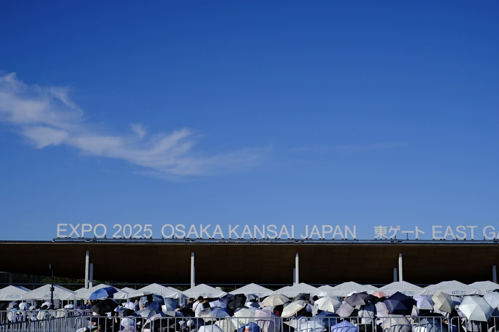
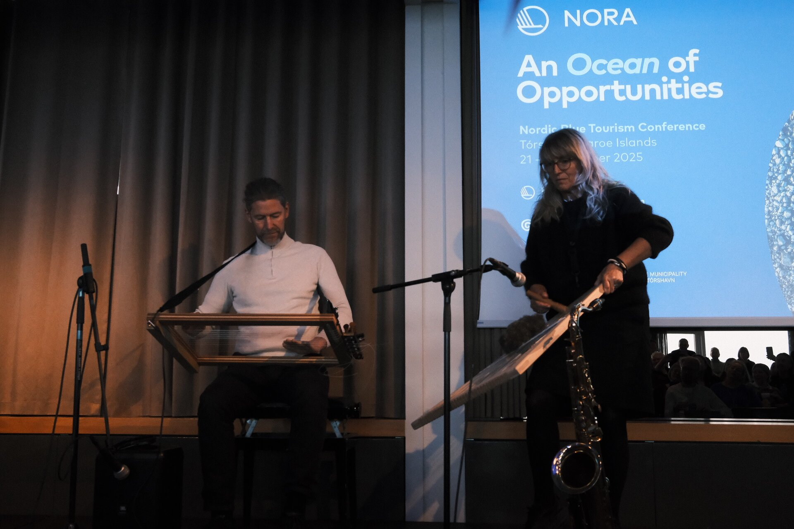
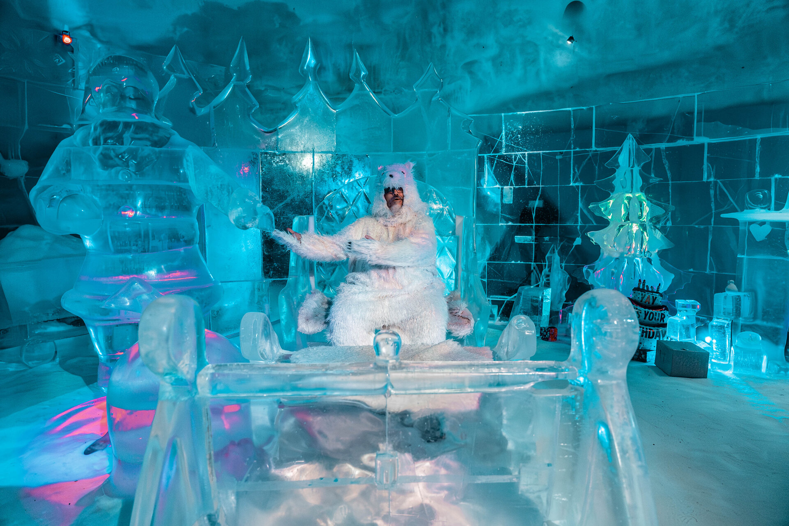

North Atlantic Cooperation · Annual Report
NORA
Annual
Report
2025
Supporting sustainable development across Iceland, Greenland, the Faroe Islands and Coastal Norway.
Scroll
North Atlantic Cooperation · Annual Report
2025
Supporting sustainable development across Iceland, Greenland, the Faroe Islands and Coastal Norway.

NORA's invitation to participate in the Expo 2025 world fair in Osaka, Japan was a significant recognition of our work to develop and draw attention to the potential of the North Atlantic region. NORA was chosen to use the Arctic Young Chef concept to showcase Nordic food culture in a global context. We see this as a clear expression of the strength and relevance that our long-term work in the areas of sustainability, innovation and local resources has achieved.


The conference at the University of the Highlands and Islands in Stornoway brought together around 70 participants from Scotland — including Shetland and Orkney — as well as Greenland, Iceland, the Faroe Islands, and Norway.
Stories, faces and moments from across Iceland, Greenland, the Faroe Islands and Coastal Norway — updated as our projects unfold.

As part of its 2025 NORA chairship, the Faroe Islands chose to host a conference dedicated to exploring the potential of marine and coastal tourism in the North Atlantic.
The North Atlantic is not a periphery — it is a connected, living network of communities, ideas and resources shaping the future of sustainable development.

The NORA-funded ICE Arctic Youth Community (ICEAYC) project is currently in its third and final year under NORA's wings. This dynamic, three-year initiative led by Sør-Varanger Utvikling / ICE Kirkenes has seen over 80 applicants from the NORA area — including strong representation from Greenland.
The Region
NORA brings together self-governing territories and coastal regions united by shared geography, maritime heritage, and opportunity — from Norway's coast to the edges of the Arctic.
NORA's Committee is made up of delegations that meet up to twice per year. The chairmanship rotates between member countries. Norway held the leadership in 2025.
No decisions may be made prior to reviews and negotiations. The principle of consensus should be applied in negotiations whenever possible. For decisions of principle to be approved, none of the delegations may oppose the decision.